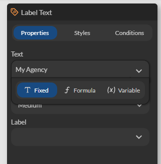

Formulas
The formula editor is a powerful tool within our No-Code platform that allows you to create custom formulas. These formulas can integrate text, functions, and enable the display of dynamic data such as variables, calculations, table data, images, and more.
Accessing the Editor
Certain component and action properties support formulas, typically when the property expects text. For example, the Text property of the Label Text component.
Click on the menu to the right of the property to view all available options. Here, the Text property can be populated from:
- A fixed text (without a variable)
- A formula
- A variable

Select Formula to access the formula editor.
Formula Editor
The formula editor allows you to combine text with contextual data. To do this, simply enter the text and drag and drop the required functions.
For example: "You have ordered [Count rows] products." Here, [Count rows] represents a dynamic data point (the result of a function) that calculates the number of rows from a table.

Fonctions
| Categorie | Description |
|---|---|
| Condition | Allows displaying text if a condition is true IF THEN IF THEN_ELSE |
| Number | Displays, generates, and calculates a number AMOUNT CALCULATE RANDOM |
| Date | Allows displaying a simple date, calculating a duration between two dates, and performing date calculations Current date & time Duration from today Add Substract |
| Text | Allows transforming a text, searching for, and replacing a pattern in a text Text Lowercase Uppercase Capitalize Concatenate Substring Replace Split |
| Data | Displays the result of an aggregation on tables Count rows Maximum in rows Minimum in rows Average in rows Sum in rows |
| Image | Displays an image. The path must be complete (absolute) Image |
| Geolocation | Displays the distance between the GPS position or between two positions Distance from position Distance |
| Payment | Displays a cart and details Print Cart Cart amount |
| JSON | Allows searching for information in a JSON message JSON Query |
Formats
| Format | Description |
|---|---|
| Text | Formats the data as text Please scan your barcode |
| Whole number | Formats the data as an integer. Decimal numbers are truncated (ignored). 2.2 => 2 077 => 77 123.45 => 123 |
| Number | Formats the data as a decimal number. The format supports a specific number of decimals and a unit. If the specified symbol is a dollar ($), the dollar symbol appears before the number. 1.2 => 1.20 � 12.23567 => 12 km 34.3654 => 4452.3 � 12.32 => $12.32 |
| Currency | Formats the data as an amount with currency. The number is displayed with 2 decimal places. 0.2 => 0.20� 5.0 => $5.00 |
| Distance | Formats the data as a distance The most appropriate unit is used automatically. 5.2 => 5.2 m 85200 => 85.2 km |
| Duration | Formats the data as a duration The most appropriate unit is used automatically or can be manually selected. 5.2 => 5.2 s 600 => 5 m |
| Rich text | Displays HTML code <i>Italic</i> => i |